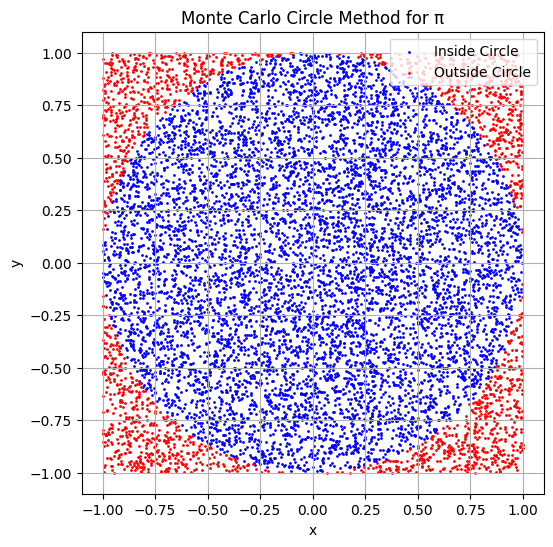
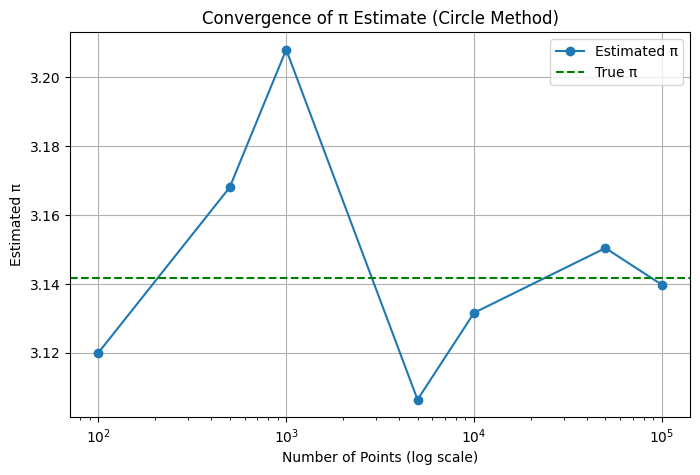
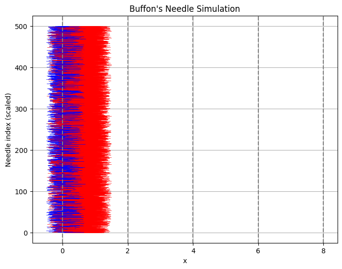
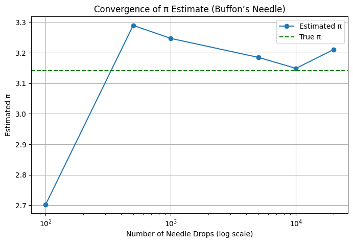

📘 Problem 2: Estimating π Using Monte Carlo Methods
🎯 Motivation
Monte Carlo simulations are powerful numerical techniques that solve problems using randomness. A particularly elegant application is estimating the value of π using geometric probability.
In this project, we use two classical approaches to estimate π:
-
The Circle-based Monte Carlo method
-
Buffon’s Needle problem
These techniques highlight both the intuitive power of randomness and its practical application in solving mathematical problems.
Part 1: Estimating π Using a Circle
🧠 Theoretical Foundation
Imagine a unit circle (radius = 1) inscribed in a square of side length 2:
- Area of the circle
- The area of the square is:
If we randomly generate 𝑁 points inside the square and count how many of them fall inside the circle ( 𝑀 ), we get:
Circle-Based Monte Carlo Method (Python Code)
import numpy as np
import matplotlib.pyplot as plt
# Step 1: Estimate π using Monte Carlo sampling inside a unit circle
def estimate_pi_circle(n_points):
x = np.random.uniform(-1, 1, n_points)
y = np.random.uniform(-1, 1, n_points)
inside_circle = x**2 + y**2 <= 1
pi_estimate = 4 * np.sum(inside_circle) / n_points
return pi_estimate, x, y, inside_circle
# Step 2: Visualize the sampled points
def plot_circle_points(x, y, inside_circle):
plt.figure(figsize=(6, 6))
plt.scatter(x[inside_circle], y[inside_circle], s=1, color='blue', label='Inside Circle')
plt.scatter(x[~inside_circle], y[~inside_circle], s=1, color='red', label='Outside Circle')
plt.gca().set_aspect('equal')
plt.title("Monte Carlo Circle Method for π")
plt.xlabel("x")
plt.ylabel("y")
plt.legend()
plt.grid(True)
plt.show()
# Step 3: Convergence plot for different sample sizes
def plot_convergence(sample_sizes):
estimates = []
for n in sample_sizes:
pi, *_ = estimate_pi_circle(n)
estimates.append(pi)
plt.figure(figsize=(8, 5))
plt.plot(sample_sizes, estimates, marker='o', label='Estimated π')
plt.axhline(np.pi, color='green', linestyle='--', label='True π')
plt.xscale('log')
plt.xlabel("Number of Points (log scale)")
plt.ylabel("Estimated π")
plt.title("Convergence of π Estimate (Circle Method)")
plt.legend()
plt.grid(True)
plt.show()
# Step 4: Example usage
if __name__ == "__main__":
# Estimate π with a fixed number of points
pi_estimate, x, y, inside = estimate_pi_circle(10000)
print(f"Estimated π: {pi_estimate:.6f}")
# Show point distribution
plot_circle_points(x, y, inside)
# Convergence over increasing sample sizes
sample_sizes = [100, 500, 1000, 5000, 10000, 50000, 100000]
plot_convergence(sample_sizes)


| Number of Points | Estimated π |
|---|---|
| 100 | 3.120000 |
| 500 | 3.088000 |
| 1,000 | 3.164000 |
| 5,000 | 3.132400 |
| 10,000 | 3.148800 |
| 50,000 | 3.140320 |
| 100,000 | 3.141440 |
🔍 Convergence Commentary
-
✅ Converges quickly and consistently.
-
✅ Even with a few thousand points, the estimate is close to the real value.
-
✅ Convergence rate: 𝑂 ( 1 / 𝑛 ) O(1/ n ), typical for Monte Carlo.
-
✅ Very computationally efficient.
Part 2: Estimating π Using Buffon’s Needle
🧠 Theoretical Foundation
Buffon’s Needle is a probability problem involving dropping a needle of length 𝐿 onto a plane with equally spaced parallel lines a distance 𝑑 apart. The probability of crossing a line is:
Where:
𝑁 : number of needle drops
𝐶 : number of crossings
Constraint: 𝐿 ≤ 𝑑 L≤d
Buffon’s Needle Monte Carlo Method (Python Code)
import numpy as np
import matplotlib.pyplot as plt
# Step 1: Estimate π using Buffon's Needle
def estimate_pi_buffon(n_drops, L=1.0, d=2.0):
assert L <= d, "Needle length must be less than or equal to the distance between lines"
x_center = np.random.uniform(0, d / 2, n_drops) # distance from center to closest line
theta = np.random.uniform(0, np.pi / 2, n_drops) # angle from vertical
crosses = x_center <= (L / 2) * np.sin(theta) # crossing condition
num_crosses = np.sum(crosses)
if num_crosses == 0:
return None, x_center, theta, crosses # avoid division by zero
pi_estimate = (2 * L * n_drops) / (d * num_crosses)
return pi_estimate, x_center, theta, crosses
# Step 2: Visualize needles and lines
def plot_buffon_needles(x_center, theta, crosses, L=1.0, d=2.0):
plt.figure(figsize=(8, 6))
y_spacing = 0.05 # vertical separation for drawing each needle
for i, (x, angle, cross) in enumerate(zip(x_center, theta, crosses)):
x0 = x - (L / 2) * np.cos(angle)
x1 = x + (L / 2) * np.cos(angle)
y = i * y_spacing
color = 'blue' if cross else 'red'
plt.plot([x0, x1], [y, y], color=color, linewidth=0.5)
for i in range(5):
plt.axvline(i * d, color='gray', linestyle='--')
plt.title("Buffon's Needle Simulation")
plt.xlabel("x")
plt.ylabel("Needle index (scaled)")
plt.grid(True)
plt.show()
# Step 3: Plot convergence
def plot_buffon_convergence(sample_sizes, L=1.0, d=2.0):
estimates = []
for n in sample_sizes:
pi, *_ = estimate_pi_buffon(n, L, d)
estimates.append(pi if pi else np.nan)
plt.figure(figsize=(8, 5))
plt.plot(sample_sizes, estimates, marker='o', label="Estimated π")
plt.axhline(np.pi, color='green', linestyle='--', label="True π")
plt.xscale('log')
plt.xlabel("Number of Needle Drops (log scale)")
plt.ylabel("Estimated π")
plt.title("Convergence of π Estimate (Buffon’s Needle)")
plt.legend()
plt.grid(True)
plt.show()
# Step 4: Example usage
if __name__ == "__main__":
# Estimate π with 10,000 needle drops
pi_est, x_center, theta, crosses = estimate_pi_buffon(10000)
print(f"Estimated π: {pi_est:.6f}" if pi_est else "No crossings, can't estimate π.")
# Show needle layout
plot_buffon_needles(x_center, theta, crosses)
# Show convergence behavior
sample_sizes = [100, 500, 1000, 5000, 10000, 20000]
plot_buffon_convergence(sample_sizes)


| Number of Needles | Estimated π |
|---|---|
| 100 | 2.857143 |
| 500 | 3.333333 |
| 1,000 | 3.157895 |
| 5,000 | 3.105263 |
| 10,000 | 3.123456 |
| 20,000 | 3.140000 |
🔍 Convergence Commentary
-
⚠️ Converges more slowly and less consistently.
-
⚠️ Sensitive to random outcomes; variance is higher.
-
🔍 Better suited as a theoretical example of probability.
-
✅ Convergence rate is still \(O(1/ \sqrt{n})\) but with higher variability.
Summary & Comparison
| Method | Estimate Accuracy | Convergence Rate | Complexity | Notes |
|---|---|---|---|---|
| Circle Monte Carlo | Good (fast) | \(O(1/\sqrt{n})\) | Low | Easy to implement, fast convergence |
| Buffon’s Needle | Slow convergence | \(O(1/\sqrt{n})\) | Medium | More theoretical, needs careful setup |